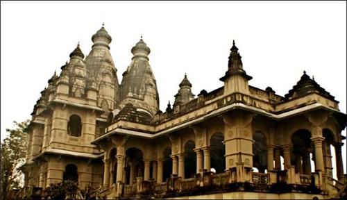

Exploring the Rich Political and Cultural History of Begusarai
Begusarai’s history is deeply intertwined with the political movements of Bihar and India. During the British colonial period, Begusarai emerged as a significant site of resistance against British rule. The region was home to several leaders who contributed to India’s independence struggle. Many local freedom fighters played a crucial role in the various anti-colonial movements of the 19th and 20th centuries.
In the post-independence era, Begusarai became a stronghold for left-wing politics, particularly the communist movement. The city’s political significance grew as it became a major center for socialist and communist ideologies in Bihar. In the 1960s, the city saw a rise in political activism, with large-scale protests and movements led by labor unions, farmers, and students. The region’s political legacy remains strong today, with many of its leaders having served as key figures in Bihar’s state politics.
The role of Begusarai in India’s independence movement cannot be understated. Many historical events, including protests and uprisings, took place in and around the city. These movements, spearheaded by local leaders and national figures, played an essential role in the larger context of India’s freedom struggle. The people of Begusarai, with their commitment to political change, contributed significantly to the liberation of India.

The city is also home to several landmarks of historical importance, including the Ajatshatru Fort, which dates back to the Magadh Empire. This fort was once a strategic military location and played an important role during various dynasties, including the Maurya and Gupta periods. Today, the fort stands as a symbol of Begusarai’s historical significance.
In addition to its political importance, Begusarai has been a center for art and literature. The city is known for its contribution to the literary world, particularly in Hindi literature. One of the most notable figures from Begusarai is the famous poet Ramdhari Singh Dinkar, often referred to as the 'National Poet of India.' Dinkar's works were deeply influenced by the political and social issues of his time, and his poetry continues to inspire generations.
Begusarai’s rich history is not just a testament to its political and cultural contributions, but also a reflection of the resilience and spirit of its people. The city’s historical significance continues to be a source of pride for its residents, and its legacy is celebrated through various cultural events and festivals that take place throughout the year.
In conclusion, Begusarai’s history is a narrative of struggle, resilience, and cultural pride. The city has contributed significantly to India’s political, cultural, and social evolution. From its role in India’s independence movement to its modern-day political importance, Begusarai’s historical legacy continues to shape its identity and place in the world.